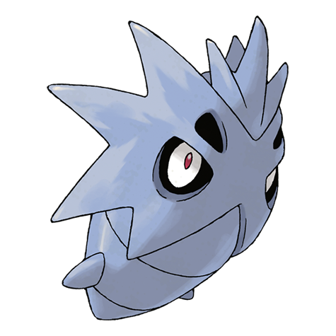
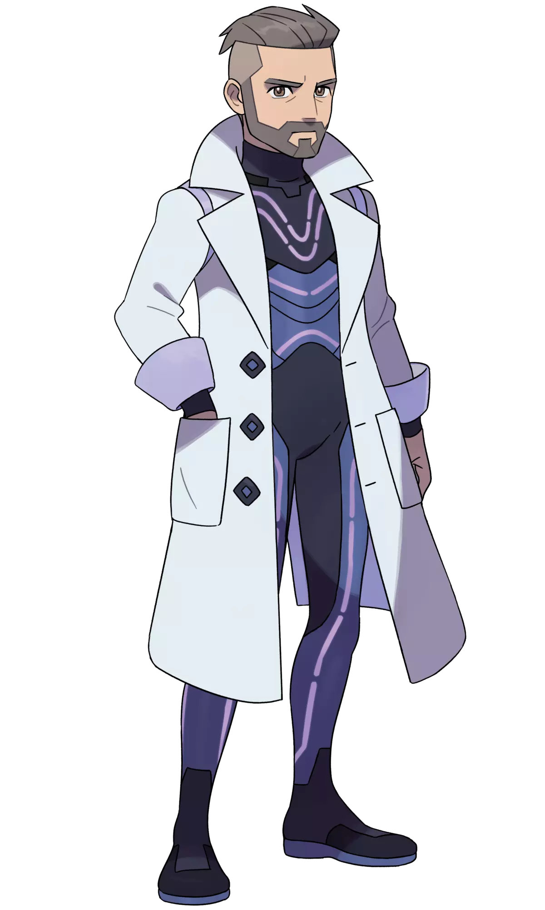

Diferencias entre distintas versiones de Pokémon
POKÉMON ESCARLATA
 Lanzamiento: 18/11/2022 Género: Rol
Lanzamiento: 18/11/2022 Género: Rol
Profesor:
Albora, científica y profesora Pokémon. Gran parte de su vida, la ha dedicado al estudio de los Pokémon paradojas, la teracristalización y al pasado de los Pokémon, anotando sus descubrimientos en los diarios del Área Cero.
Pokémon exclusivos:
Larvitar

Pupitar
Tyranitar
Stonjourner
Koraidon
Armarouge
La academia:
La ropa:
POKÉMON PURPURA
Lanzamiento: 18/11/2022 Género: RolProfesor:
Turo, científico y profesor Pokémon. Gran parte de su vida, la ha dedicado al estudio de los Pokémon paradojas, la teracristalización y al futuro de los Pokémon, anotando sus descubrimientos en los diarios del Área Cero.
Pokémon exclusivos:
Bagon
Shelgon
Salamence
Eiscue
Miraidon
Ceruledge